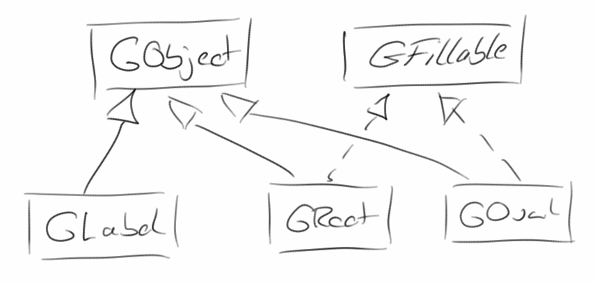
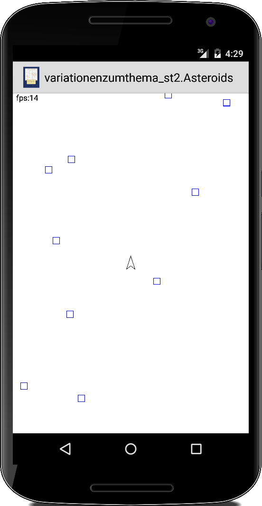
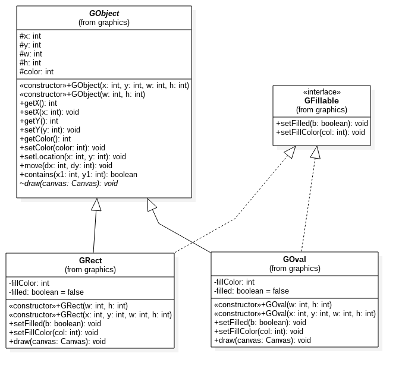
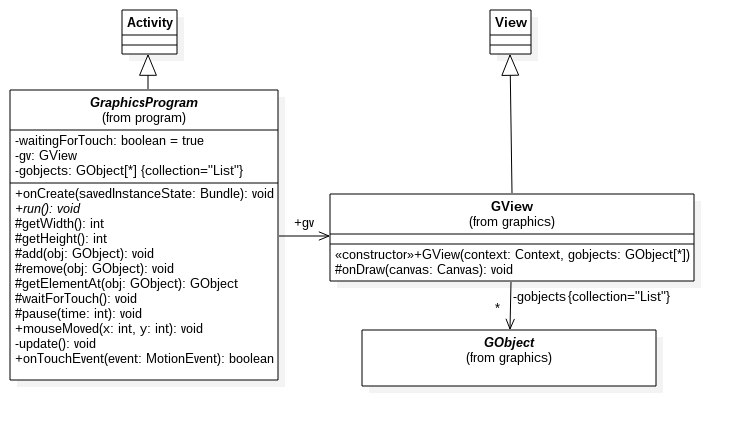
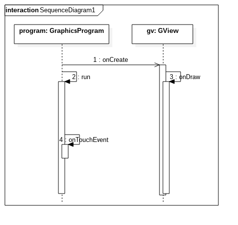

Special Topic: Libraries
Wiederverwendung ist das Thema in diesem Kapitel. Wir haben gesehen, dass wir unsere alten ACM Grafikprogramme mit ein paar Modifikationen auf Android portieren können. Die Frage ist, können wir das auch ohne Änderungen? Die Idee ist also, eine acm.jar Datei für Android zu erstellen.
.
Requirements for GRect, GOval and GObject
Sehen wir uns zunächst die Anforderungen für GRect, GOval und auch GObject an. Wir werfen dazu einen Blick auf BrickBreaker und fragen uns: welche Methoden benötigen wir, damit wir dieses Spiel implementieren können? Geht man Zeile für Zeile den Code von BrickBreaker durch, kommt folgende Liste heraus:
- getX() und getY()
- getWidth() und getHeight()
- move(dx, dy) und setLocation(x, y)
- setColor(col)
- setFilled(b) und setFillColor(col)
- und zwei Constructoren der Form GRect(w,h) und GRect(x,y,w,h)
Das ist also unsere Minimalanforderung. Aus der lässt sich folgendes Klassendiagramm ableiten:

.
GObject
Beginnen wir mit der GObject Klasse. Da ausser der draw() Methode praktisch alle Methoden zwischen GRect und GOval identisch sind, macht es Sinn die in einer Elternklasse, GObject, zu implementieren. Die draw() Methode allerdings muss unterschiedlich sein, deswegen deklarieren wir sie als abstract:
abstract void draw(Canvas canvas);
Dies bedeutet, dass alle Klassen, die von GObject erben (wie GRect und GOval), diese Methode implementieren müssen. Es bedeutet aber auch das die Klasse GObject als abstract deklariert werden muss. In den jeweiligen Kinderklassen, also GRect und GOval, müssen wir dann diese Methode überschreiben.
.
GFillable
Wir hätten die Methoden setFilled() und setFillColor() auch in der GObject Klasse implementieren können. Allerdings gibt es Klassen, wie z.B. GLabel und GLine, für die diese Methoden keinen Sinn machen. Deswegen lagern wir diese in ein Interface aus, das GFillable Interface. Der Nachteil von Interfaces in Java ist, dass sie keinen Code beinhalten dürfen. Deswegen muss die eigentliche Implementierung dieser Methoden in den Klasse GRect und GOval passieren (Duplication of Code). Das ist der Preis den man dafür zahlen muss, dass es in Java keine Mehrfachvererbung gibt.
.
GraphicsProgram
Der nächste Schritt ist das GraphicsProgram von ACM. Wiederum werfen wir einen Blick auf BrickBreaker und sehen, dass wir mindestens die folgenden Methoden benötigen:
- run()
- waitForClick()
- pause(t)
- getElementAt(x, y)
- setSize(w, h)
- add(o)
- mouseMoved()
- und addMouseListeners().
Dies bestimmt im Wesentlichen, wie unsere GraphicsProgram Klasse aussehen muss:

Es gibt eine wichtige Sache, die wir beachten müssen: In Android wird das Zeichen in der onDraw() Methode der View Klasse durchgeführt. Touch Events hingegen werden an die onTouchEvent() Methode der Activity Klasse delegiert. Das bedeutet, dass das Zeichnen der GRects und GOvals in der GView-Klasse erfolgen muss, während die Bewegung der GObjecte aufgrund von GameLoop und/oder Touch Events, in der GraphicsProgram-Klasse erfolgen muss. Da beide Klassen also auf die GObjekte zugreifen müssen, müssen wir sie zwischen beiden Klassen teilen (shared Resource).
.
Multi-Threading
Bei Animationen und Spielen mit der ACM-Bibliothek waren wir uns dessen nicht bewusst, aber eigentlich geschahen zwei Dinge gleichzeitig: Einerseits war es der Game Loop der ständig gelaufen ist und unabhängig davon wurden die GObjects gezeichnet. Wir müssen dies nun von Hand implementieren, und der einzige Weg, dies zu tun, ist mit Threads zu arbeiten: Ein Thread macht den Game Loop (in GraphicsProgram) und der andere das Zeichnen (in GView).
Was passiert, ist am einfachsten mit einem Sequenzdiagramm zu sehen:

Solange zwei Threads keine gemeinsame Resource teilen, kann nicht viel schief gehen. Aber in unserem Fall teilen sich die beiden Threads eine gemeinsame Ressource, die Liste der GObjects. Diese Liste muss mit Vorsicht behandelt werden, und das ist es, was die folgende Zeile tut:
private List<GObject> gobjects =
Collections.synchronizedList(new ArrayList<GObject>());
Es besagt im Grunde, dass jeder Zugriff auf diese Liste synchronisiert werden muss.
.
Library - Reuse
Wir können jetzt alle unsere Grafikprogramme aus dem ersten und zweiten Semester auf Android Geräten laufen lassen. Dazu müssen wir lediglich den Quellcode für die Grafikklassen dazu kopieren, und die Imports in den original Grafikprogrammen anpassen. Es geht aber noch einfacher: wir können aus unseren Grafikklassen auch eine jar-Bibliothek erstellen, ähnlich der acm.jar Bibliothek. Diese acm_graphics.jar müssten wir dann anstelle der acm.jar Bibiliothek verwenden, und schon laufen unsere alten Programme auf Android.
Um mit Eclipse eine jar Bibiliothek zu erstellen, beginnt man mit einem Standard-Java-Projekt. Dorthin kopiert man die Java-Quelldateien von acm_graphics. Nun müssen wir einen Verweis auf die Datei android.jar (zu finden z.B. in /Android/Sdk/platforms/android-21/) im Java Build Path hinzufügen. Dann müssten unsere Klassen eigentlich kompilieren. Zum Generieren der jar Datei, klickt man im Package Explorer mit der rechten Maustaste und wählt Export, dann Java->JAR-Datei und klickt auf Weiter. Auf dem nächsten Bildschirm wählt man nur die Dateien aus, die man auch in der jar Datei haben möchten. Als nächstes wählt man das Exportziel, etwa AppA_AcmLibrary/lib/acm_android.jar. Meist gibt es jetzt noch ein paar nichtssagende Fehlermeldungen, die meist nicht viel zu bedeuten haben. Man schaut einfach in die jar-Datei (es ist nur eine ZIP-Datei) und stellt sicher, dass sie das enthält, was sie soll.
Arbeitet man mit Android Studio, dann ist das Erstellen von jar-Bibliotheken etwas komplizierter, aber nicht viel [1].
.
References
[1] How to make a .jar out from an Android Studio project, stackoverflow.com/questions/21712714/how-to-make-a-jar-out-from-an-android-studio-project
.